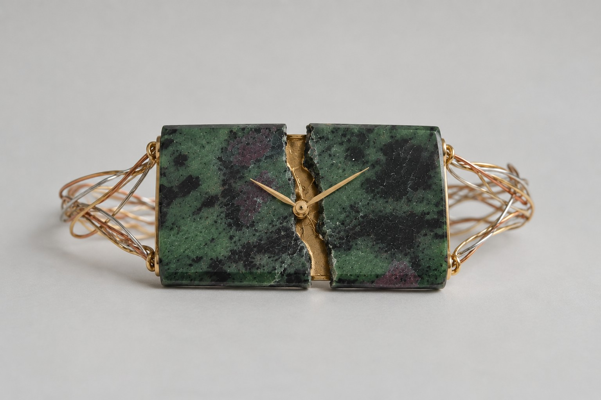
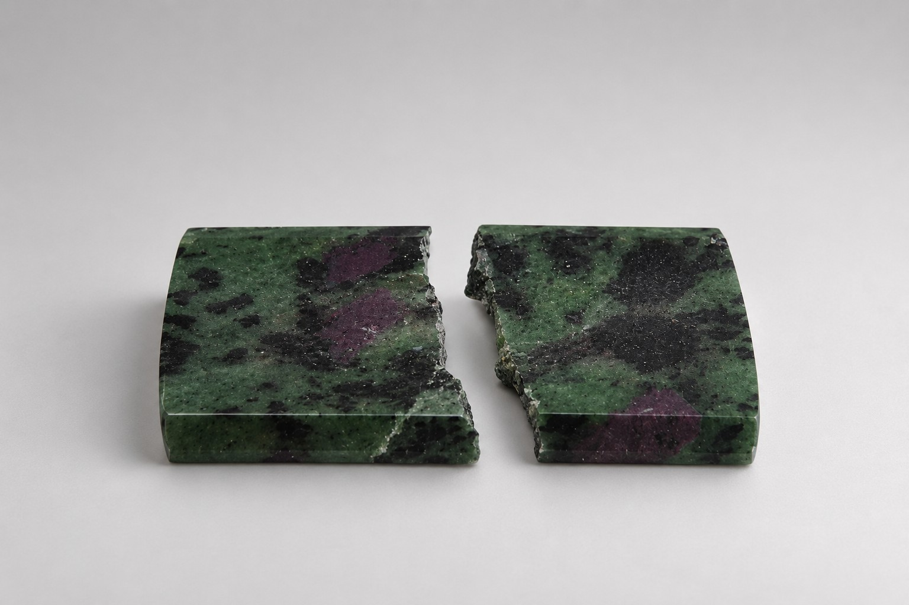
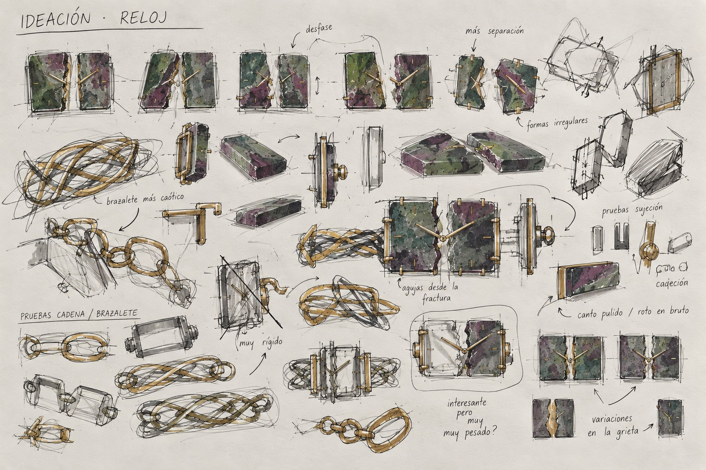
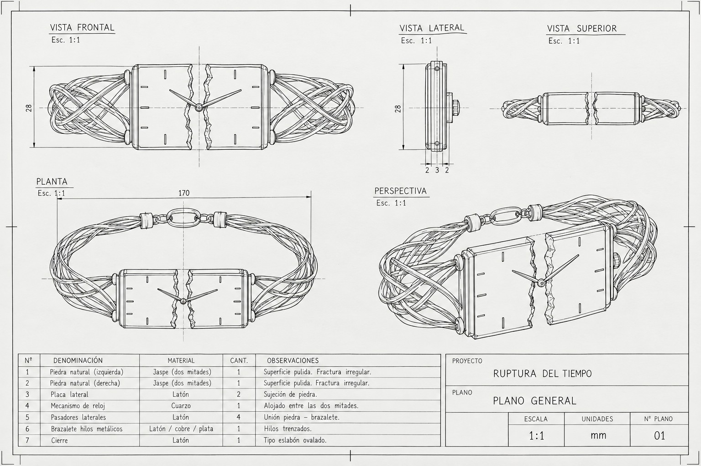
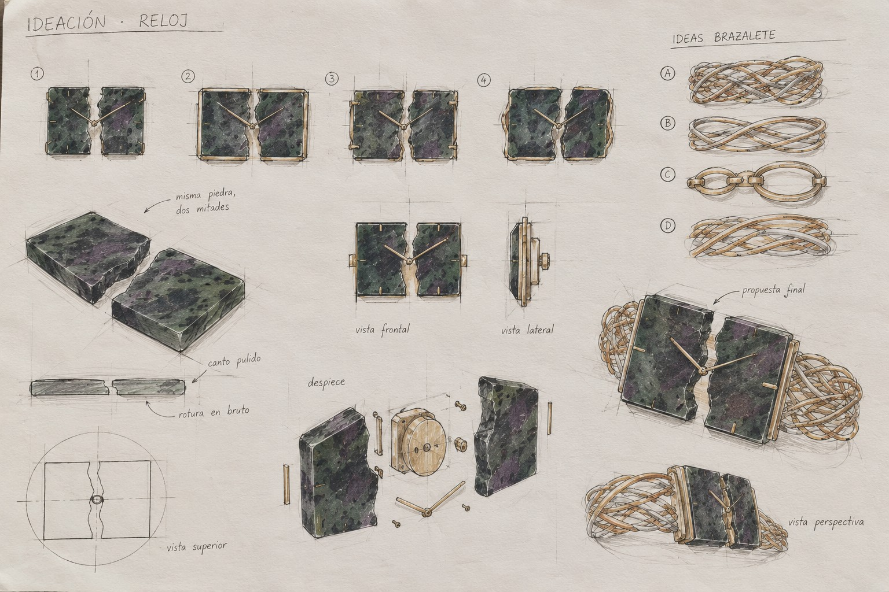

INTERVAL

TIME BEGINS IN THE BREAK.
INTERVAL began with ruby in zoisite, cut, shaped and polished by hand. A fracture divided the stone in two. I kept the break and developed the watch proposal around the space it left.
The proposed hands emerge between the two halves. A measured rhythm is placed against an irregular gap; the woven bracelet develops that tension between control and discontinuity.
LEARNING THE MECHANISM
I had no watchmaking training. To understand the system, I dismantled approximately four or five different watches, compared their mechanisms and studied how they worked. That knowledge informed the development of the proposal.
The sketches explore how the divided stone face, hands and bracelet could relate. The technical drawing records the proposed arrangement; it is not evidence of a completed working watch.
Physical work / visual proposal: the stone is a physical piece cut, shaped and polished by hand. The complete watch, mechanism and bracelet shown in the visualisations remain a development proposal.





